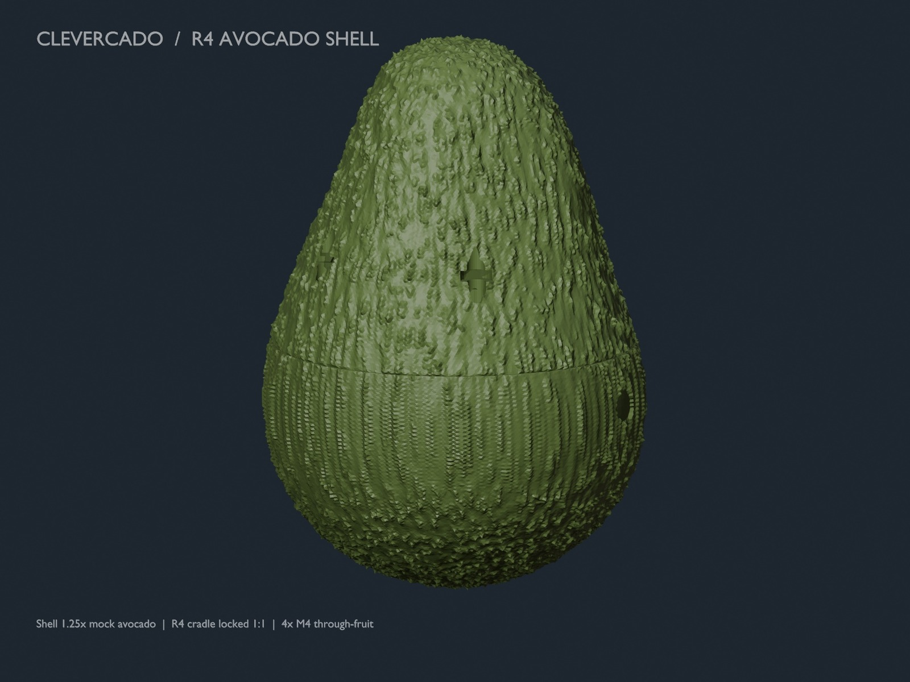
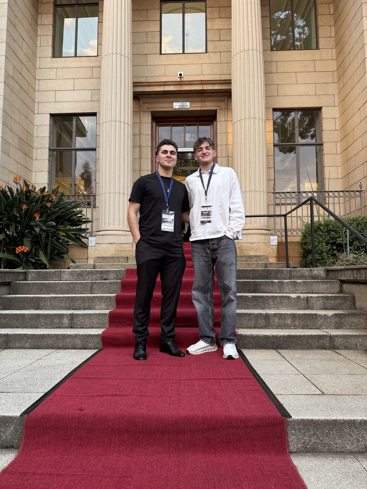
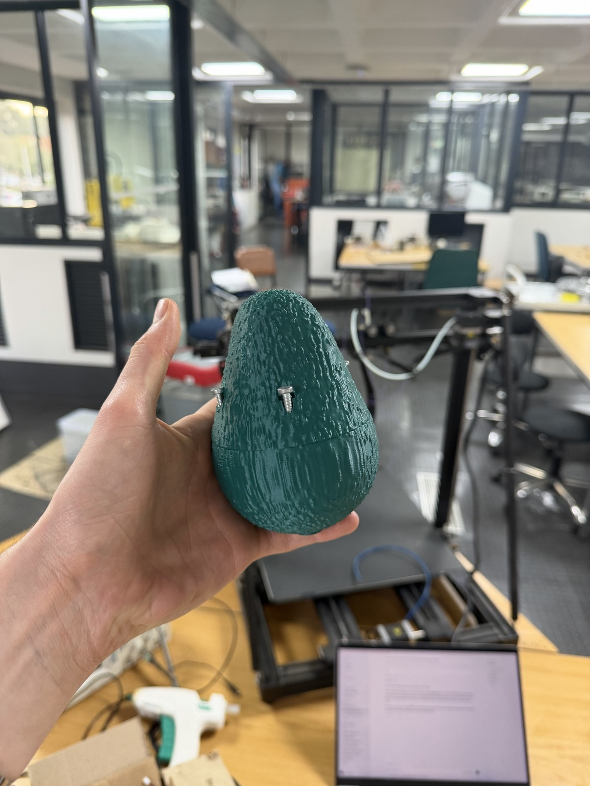
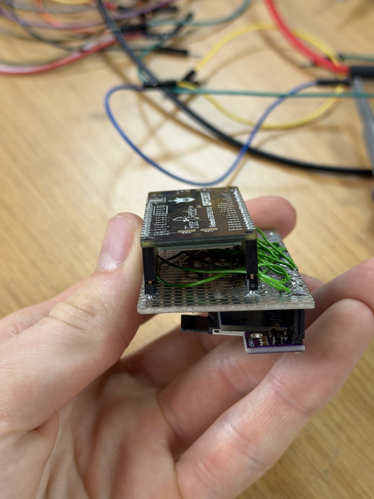
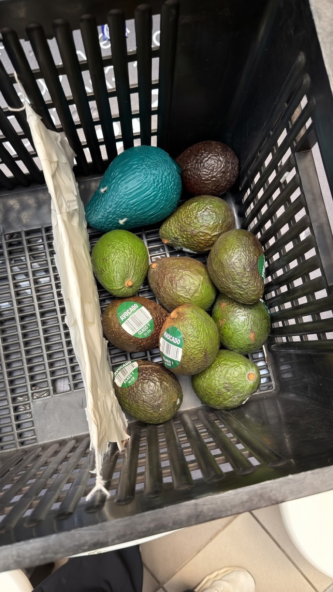

TWO FOUNDERS. ONE UNFINISHED STORY.
Two paths.
One purpose.
Two founders, one shared curiosity, and an idea to make the avocado journey more visible.
THE PEOPLETHE JOURNEYTHE BUILD


THE PEOPLE BEHIND THE IDEADylan & Dylan
BUILT WITHcuriosity ✳and a lot of iteration
PROVISIONAL CAD ✳ REAL PROJECT PHOTOGRAPHS
01 / WHO WE ARE
Better together.
Different experiences. One shared habit: building.
THE PEOPLE 01 / 05
AND
THE INTERSECTION ✳
Both contribute engineering and entrepreneurship, with different emphases.
02 / HOW IT STARTED
A project became a purpose.
From an investigation project to conversations with the people closest to the problem.
THE ORIGIN 02 / 05
04 / THE JOURNEY SO FAR
From an idea to a prototype.
Competitions, conversations and eight weeks of engineering.
THE JOURNEY 04 / 05
03 / THE PROBLEM & SOLUTION
Making the journey visible.
From hidden handling risk to a smart-avocado proof of concept.
PROBLEM & SOLUTION 03 / 05
THE DISTINCTION THAT MATTERSProxy motion is not the same as detecting bruising or proving fruit damage.
05 / WHAT COMES NEXT
Still curious.
Still building.
Improve the device, learn in the supply chain and use real-world data to prepare for an initial pilot.
PILOT FIRST · STONE FRUIT & OTHER PRODUCE LATER



01Improve the deviceReliability, calibration and readiness for field use.
02See the supply chainMeet industry contacts and collect real-world data.
03Retrain the modelUse field data to improve motion classification.
04Pilot and share resultsWork with industry partners, then return to Sir John.
MADE IN JOHANNESBURG✳